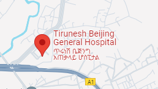

እንኳን ወደ ኢቲዮ-ሃሽ ፕሮጀክት በደህና መጡ
በምስራቅ ኣፍሪካ በ ኢትዩጵያ ውስጥ የሚገኝው የ (HASH) ፕሮጀክት ቡድን
የአፍሪካ የእናቶች የጤና ጉዳይ፣ጾታዊ ጉዳይ እንዲሁም በግብረ ስጋ ግንኝነት የሚተላለፍ በሽታዎችን ጉዳይ በአርቴፊሻል ኢንተለጀንስ በመደገፍ እየሰራ መሆኑ የታወቃል።
ኢቲዮ-ሃሽ ቻትቦት ለኢትዮጵያ ዩኒቨርሲቲ ተማሪዎችን በግብረ ሥጋ ግንኙነት የሚተላለፉ በሽታዎችን የግንዛቤ ማስጨበጥ ስራ ይስራል፣ሚስጥርን በጠበቀ መልኩ የመጀመሪያ ምርመራ
ያደርጋል እንዲሁም በአካባቢ ያሉትን የጤና ጣቢያ ይጠቁማል።ይህ የጅምር የምርመራ ቻትቦት ስለ ግብረ ሥጋ ግንኙነት የሚተላለፉ በሽታዎችን (STDs) የግንዛቤ ማስጨበጥ ስራ
የሚሰራው ወቅታዊ ከሆነው ከ ዩኒቨርሲቲ ተማሪዎች የውስጥ እና የውጭ እንቅሰቃሴ ላይ በመመስረት ነው።
ይህ የቻትቦት የዘላቂ ልማት ግቦች 3 ላይ የተቀመጠውን ሁሉም ሰው የገንዘብ ችግር
ሳይገጥመው ጥራት ያለው የጤና አገልግሎት እንዲያገኝ ማረጋገጥ የሚለውን ለማሳካት ይጠቅማል።
ስለ ፕሮጀክቱ
ከሰሃራ በታች ባሉ የአፍሪካ የእናቶችን ጤንንነት፣ ጾታዊ እና የስነ ተዋልዶ ጤና አርቴፊሻል ኢንተለጀንስ ላይ ያለው የኢኖቬሽን ማዕከል ((HASH)) በ AI4D ፕሮጀክት በIDRC የሚደገፍ ፕሮጀክት
ነው. እንደ ንኡስ የፕሮጀክት አካል ፥የአዲስ አበባ ሳይንስና ቴክኖሎጂ ዩኒቨርሲቲ ((AASTU)) ቡድን በሱራፌል ሉልሰገድ ጥላሁን (ዶ/ር) እንደ ፒአይ እና አቶ ጌታቸው ደርሶ እንደ ተባባሪ ፒአይ የሚመራው ቡድን
ቻትቦት የሚያሳይ ድረ-ገጽ ፈጠረ። ቡድኑ በንዑስ ቡድኖች የተከፋፈለ ነው። የሒሳብ ሞዴሊንግ ቡድን፣ በአቶ ሰለሞን ሞላ የሚመራው ሲሆን በ ምህረት ጥበበ እና ኤልሳቤት ሰሎሞን የሚመራው የቻትቦት ዲዛይን ቡድን እዲሁም በዶ/ር ፍሬሂወት ጉተማ የሚመራው የህክምና ቡድን ነው።. ይህ ድረ-ገጽ መሰረታዊ የፕሮጀክት መረጃን፣ ሚስጥራዊ
ቻትቦት፣ በአቅራቢያው ያሉ ተዛማጅ ጤና ጣቢያዎች፣ በዙሪያው ያሉ ሁኔታዎችን እና መንስኤዎችን እና ሌሎች ግንዛቤን ለማሳደግ የሚጠቅሙ ግብዓቶችን ይዟል።
ለበለጠ መረጃ እባክዎን የፕሮጀክቱን ዋና መርማሪ በ surafel.luleseged@aastu.edu.etያግኙ።
በጾታዊ ግንኙነት የሚተላለፉ በሽታዎች
በጾታዊ ግንኙነት የሚተላለፉ በሽታዎች (STDs) ከፍተኛ የህብረተሰብ ጤና ስጋት ናቸው:: እነዚህን ስለ መከላከል እና ጥበቃ ግንዛቤን እና ትምህርትን ማስተዋወቅ አስፈላጊ ነው፡፡
እንደ WHO ገለጻ፣ የአባላዘር በሽታዎችን ለማከም በክሊኒካዊ መቼቶች ውስጥ በሰፊው ጥቅም ላይ የዋለው የአባላዘር በሽታ (STIs) ሲንድሮሚክ አስተዳደር ነው፣ በተለይም በንብረት-ውሱን
አካባቢዎች። በማደግ ላይ ያሉ አገሮች ታካሚዎችን ለማከም የሲንዶርሚክ ዘዴን ይጠቀማሉ። ከዚህ በታች ያለው ሰንጠረዥ በጣም የተለመዱትን ሲንድረምስ እና ካልታከሙ ሊያመጡ ውስብስብ ነገሮችን
ጨምሮ ዝርዝር መረጃን ይሰጣል፡፡ የአባላዘር በሽታ ያለበት ታካሚ ከ ሲንድሮም አንዱን ሊያመጣ ይችላል።
የሚከተለው ሰንጠርዥ ዝርዝር ስለሲንድሮምና ተያያዥ መረጃዎችን የያዘ ነው።
| Syndrome |
Symptoms |
Most Common Causes |
| Vaginal discharge |
ያልተለመደ የሴት ብልት ፈሳሽ፣ የሴት ብልት ማሳከክ፣ በሽንት ጊዜ ህመም |
Candidiasis
Trichomoniasis
Bacterial vaginosis
Gonorrhea
Chlamydia
|
| Urethral discharge |
ያልተለመደ የሽንት ቧንቧ ፈሳሽ፣ በሽንት ጊዜ ህመም፣ ብዙ ጊዜ መሽናት |
Gonorrhea
Chlamydia
|
| Genital ulcer |
የብልት አካባቢ እብጠት |
Syphilis
Chancroid
Genital herpes
|
| Lower abdominal pain |
የታችኛው የሆድ ክፍል ህመም፣ በጾታዊ ግንኙነት ወቅት ህመም |
Gonorrhea
Chlamydia
|
| Scrotal swelling |
የማህደረ ቆለጥ ህመም እና እብጠት |
Gonorrhea
Chlamydia
|
| Inguinal bubo |
ብሽሽት ላይ የሚያሰቃይ እብጠት |
LGV
Chancroid
|
| Genital warts |
ፊንጢጣ ማሳከክ |
HPV |
| Scabies |
ከባድ ማሳከክ |
Mites |
| Pediculosis pubis |
ማሳከክ |
Crabs |
| Viral Hepatitis |
ትኩሳት፣ የዓይን እና የቆዳ ቢጫ ቀለም፣ የሆድ ህመም |
Hepatitis virus |
የግብረ ሥጋ ግንኙነት የሚያደርጉ ከሆነ መደበኛ ምርመራ እንዲያደርጉ ይመከራል። ምንም እንኳን የሕመም ምልክቶች ባይኖርዎትም, መደበኛ የአባላዘር በሽታ (STD) ምርመራ ቀደም ብሎ ለመለየት
እና ለህክምና አስፈላጊ ነው፡፡ በተጨማሪም ፣ ያሉትን መረጃዎች መረዳትና እና ለበሽታው በተጋለጡ ጊዜ የባለሙያ ድጋፍ መፈለግ አስፈላጊ ነው። የአባላዘር በሽታ (STD) ካልታከመ መካንነት፣
ካንሰሮችን እና የእርግዝና ችግሮችን ጨምሮ ሊያስከትል ። ከታች ያለው ሰንጠረዥ የአባላዘር በሽታዎችን እና ዝርዝሮቻቸውን ካልታከሙ ሊያመጡ የሚችሉትን ውስብስብ ነገሮችን ጨምሮ ማጠቃለያ
ይሰጣል።
| በሽታ |
ኢትዮሎጂ |
የተለመደ ክሊኒካዊ አቀራረብ |
ካለመታም የሚመጡ ውስብስቦች |
| ባክቴሪያ |
| ጨብጥ |
Neisseria gonorrhoeae |
የወንድ ብልት ፈሳሾች፣ የሴት ብልት ፈሳሾች እና በታችኛው የሆድ ክፍል ውስጥ በሴቶች ላይ የሚደርሰው ህመም ፤ ምንም ምልክት የማያሳይ ሊሆን ይችላል።
|
በሽንት ቱቦ ውስጥ ያሉ ጠባሳዎች
ወደ ሌሎች የሰውነት ክፍሎች ያሰራጩ |
| ክላሚዲያ |
Chlamydia trachomatis |
የወንድ ብልት ፈሳሾች፣ የማኅጸን ቁርጠት (cervicitis) እና በታችኛው የሆድ ክፍል ውስጥ በሴቶች ላይ የሚሠቃይ ሕመም ፤ ምንም ምልክት የማያሳይ ሊሆን ይችላል። |
መሃንነት
ኤፒዲዲሚቲስ |
| ቂጥኝ |
Treponema pallidum |
አኖጄኒካል ቁስሎች (ቻንከር)፣ የኢንጊኒናል እብጠት፣ አጠቃላይ የቆዳ ሽፍታ፣ ድድ |
ዓይነ ስውርነት
ሽባነት እና በልብዎ ላይ ወደ ችግሮች ያመራሉ |
| ቻንክሮይድ |
Haemophilis ducreyi |
የብልት ቁስለት ከ inguinal እብጠት ጋር (ቡቦ) |
የፊስቱላ ትራክቶችን እድገት |
| ግራኑሎማ ኢንጒናል |
Klebsiella Granulomatis |
በብልት አካባቢ እና በፔሪንየም ላይ የበሬ ሥጋ ቀይ መልክ ያለው ቁስለት |
የደም መፍሰስ
ጠባሳ |
| የቫይረስ ኢንፌክሽኖች |
| ኤድስ |
Human Immunodeficiency Virus |
አሲምፕቶማቲክ፣ አጠቃላይ ሊምፍዴኖፓቲ፣ የማያቋርጥ ትኩሳት፣ የቆዳ ሽፍታ፣ ክብደት መቀነስ ወዘተ. |
ሊምፎማ
ካፖሲ ሳርኮማ |
| የሄርፒስ ብልት |
Herpes simplex virus type 2 (HSV 2) |
በ አኖጀነታል አካባቢ ላይ የቬሲኩላር ቁስሎች |
ከብልት ሄርፒስ የተከፈቱ ቁስሎች ያላቸው ሰዎች ለኤችአይቪ የመጋለጥ እድላቸው በእጥፍ ይጨምራል |
| የብልት ኪንታሮት |
Human pappiloma virus (HPV) |
አኖጄኒካል ኪንታሮት፣ የማኅጸን አንገት ኪንታሮት፣ በሴቶች ላይ የማኅጸን ነቀርሳ |
የፊንጢጣ ካንሰር
የሴት ብልት ካንሰር |
| የቫይረስ ሄፓታይተስ |
Hepatitis B virus (HBV) |
በዋነኛነት ምንም ምልክት ሳይታይበት ፣ ማቅለሽለሽ ፣ ማሽቆልቆል ፣ የጉበት መጨመር ፣ ጃንዲስ |
ሲሮሲስ
የጉበት ካንሰር |
| ሞሉስከም ቾንታጂኦሰም |
Molluscum contagiosum virus |
እምብርት ፣ የቆዳ ቀለም ያላቸው ጠንካራ እጢዎች ፣ ብልት ወይም አጠቃላይ |
ሁለተኛ ደረጃ ኢንፌክሽኖች |
| ሌሎች |
| ትሪኮሞኒስስ |
Trichomonas vaginalis |
አሲምፕቶማቲክ; የበዛ አረፋ ከሴት ብልት ፈሳሽ |
በኤች አይ ቪ የመያዝ አደጋን ይጨምራል |
| ካንዲዳይስ |
Candida albicans |
ወፍራም እርጎ እንደ የሴት ብልት ፈሳሽ፣ የሴት ብልት ማሳከክ ወይም ማቃጠል |
ኢንዶካርዲቲስ
ኢንዶፍታልሚቲስ |
| እከክ |
Sarcoptes scabei |
በዲጂት ፣ አክሲላ እና መቀመጫ አካባቢ መካከል የቆዳ ማሳከክ ፣ በምሽት እየተባባሰ ይሄዳል |
ሴፕቲክሚያ |
መከላከል
የአባላዘር በሽታ መከላከልን በተመለከተ ቀላል መ ሕጎች አቀራረብ እዚህ አለ።
መታቀብ
የአባላዘር በሽታዎችን ለመከላከል በጣም ውጤታማው መንገድ የሴት ብልት፣ የፊንጢጣ እና የቃልን ጨምሮ የግብረ-ሥጋ ግንኙነትን መተው ነው።
ወሲብ. መታቀብ የአባላዘር በሽታዎችን የመያዝ ወይም የማስተላለፍ አደጋን ያስወግዳል።
መታመን
ለአባላዘር በሽታዎች አሉታዊ ምርመራ ካደረገ አጋር ጋር በአንድነት የሚኖር ግንኙነት ካለህ አደጋው
የአባላዘር በሽታዎች በከፍተኛ ሁኔታ ቀንሷል። ታማኝ መሆን እና ቁርጠኝነት ያለው የረጅም ጊዜ ግንኙነት
ታማኝ ከሆነ አጋር ጋር የአባላዘር በሽታዎችን ለመከላከል ይረዳል።
መጠቀም
ቋሚ እና ትክክለኛ ኮንዶም መጠቀም የአባላዘር በሽታዎችን የመያዝ ወይም የመተላለፍ አደጋን በእጅጉ ይቀንሳል።
ኮንዶም እንደ እንቅፋት ሆኖ ከብዙ የአባላዘር በሽታዎች ይከላከላል፣ ኤች አይ ቪ፣ ጨብጥ፣ ክላሚዲያ እና
ቂጥኝ. በእያንዳንዱ የግብረ-ሥጋ ግንኙነት ወቅት ከመጀመሪያ እስከ መጨረሻ ድረስ ኮንዶም መጠቀም አስፈላጊ ነው።
ጥበቃ.
ከ መ ሕጎች በተጨማሪ ለአባላዘር በሽታዎች በየጊዜው መመርመር በጣም አስፈላጊ ነው፣ በተለይ እርስዎ ከሆኑ
ወሲባዊ ንቁ ወይም ብዙ አጋሮች አሏቸው። መሞከር ቀደም ብሎ ለማወቅ, ወቅታዊ ህክምና እና
ተጨማሪ ስርጭትን መከላከል.
እንዲሁም ስለጾታዊ ጤና፣ የአባላዘር በሽታዎች እና ከባልደረባዎ (ዎች) ጋር በግልፅ እና በታማኝነት መነጋገር በጣም አስፈላጊ ነው።
ሙከራ. ይህ መተማመንን ለመመስረት ይረዳል እና ኃላፊነት የሚሰማው የወሲብ ባህሪን ያበረታታል።
ቻትቦት
ቻትቦት የመጀመሪያ ደረጃ ምርመራን ለማቅረብ የተነደፈ እና የጤና ባለሙያዎችን ለመተካት የታሰበ አይደለም. በተነደፈ የባለሙያዎች ጥያቄዎች እና ኣስተያየት ላይ የተመሰረተ
ቻትቦት ነው.
ቻትቦቱ የተጠቃሚዎችን ስም አይጠይቅም እንዲሁም ከተጠቃሚው ምንም አይነት የግል መረጃ አይሰበስብም፣ ስለዚህ ተጠቃሚዎች ሳይጨነቁ በነፃነት ሊጠቀሙበት ይችላሉ።ቻትቦትን
ለመጠቀም ከዚህ በታች ያለውን "ወደ ቻትቦት ይቀጥሉ" የሚለውን ቁልፍ ጠቅ ያድርጉ፡:
ወደ ቻትቦት ይቀጥሉ
የእርስዎን ሚስጥር መጠበቅ ቅድሚያ የምንሰጠው ጉዳይ ነው!!!
የእርስዎ ዙሪያ [የሂሳብ ሞዴል መረጃ]
በአንዳንድ ግምቶች ላይ በመመስረት የሂሳብ ሞዴል ተዘጋጅቷል. መረጃ የተሰበሰበው ከካምፓስ ክሊኒክ እና ከአካባቢው ጤና ጣቢያዎች ነው. የመለኪያዎችን ተፅእኖ ለመተንተን
የጎደለውን መረጃ ለመሙላት ከሥነ ጽሑፍ ተጨማሪ መረጃ ጥቅም ላይ ውሏል. በዚህም መሰረት የ STD ስርጭት ከአካባቢው ማህበረሰብ በካምፓስ ውስጥ ካለው እንዲሁም ከጤና
ጣቢያዎች ስርጭት የበለጠ ነው. በግቢው ውስጥ ያለው የአባላዘር በሽታ ስርጭት በሆስፒታል ውስጥ ከሚተላለፉ ወይም ከተከታተሉ ታካሚዎች ጋር ሲነፃፀር በሁለተኛ ደረጃ ከፍ ያለ
ነው. ስለዚህ፣ ተማሪዎች ተገቢውን የ ’መ’ ህጎችን ማለትም መታቀብ፤መወሰን እንዲሁም ኮንዶም መጠቀም እርምጃ በመከተል ራሳቸውን ማወቅ እና መጠበቅ አለባቸው።የተገነባው
የሂሳብ ሞዴል እና ጥቅም ላይ የዋሉ ግምቶች ከዚህ በታች ካለው አገናኝ ማግኘት ይቻላል:
ወደ የሂሳብ ሞዴል አገናኝ
የተጠቆሙ የጤና ማእከል እና ሆስፒታሎች
የግቢው ክሊኒክ በቀን 24 ሰአት በሳምንት ሰባት ቀን መሰረታዊ እርዳታ ለመስጠት ዝግጁ ነው. ከካምፓስ ክሊኒክ በተጨማሪ የሚከተሉት ጤና ጣቢያዎች ተጨማሪ ምርመራ፣
ምርመራ እና ድጋፍ ይሰጣሉ.
Tirunesh Bejing Hospital

Milla Clinic

የመረጃዎች ምንጮች
በግብረ ሥጋ ግንኙነት ስለሚተላለፉ በሽታዎች (STDs) ጥልቅ ድጋፍ እና መረጃ ለመስጠት፣ ስለ መከላከል፣ ምርመራ፣ ዓይነት እና ሌሎች እውነታዎች የበለጠ ለመረዳት
እንዲረዳዎ ከዚህ በታች ካሉ አስተማማኝ ምንጮች የተለያዩ ሀብቶችን ሰብስበናል.
አስተያየት
የእርስዎን አስተያየት ዋጋ እንሰጣለን!
የእርስዎ አስተያየት የእኛን STD chatbot አገልግሎት ጥራት ለማሻሻል ይረዳናል, እንዲሁም ሌላ አገልግሎት የቀረበ ድረ. ለለውጦች ማንኛውም ምክሮች ካሎት፣ ማንኛውም ችግሮች ካጋጠሙዎት
ወይም በቀላሉ የእርስዎን ተሞክሮ ማካፈል ከፈለጉ እባክዎን የማይታወቁ አስተያየቶችዎን ከዚህ በታች ይተዉት። ከእኛ ምላሽ መቀበል ከፈለጉ እባክዎን የኢሜል አድራሻዎን ይተዉት።